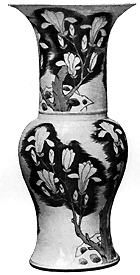
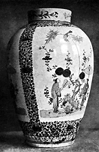

| The Letters of Père
d'Entrecolles
Part 1
From William Burton's Porcelain, It's Art and Manufacture,
B.T. Batsford, London, 1906. The first letter was addressed to Pere
Orry, procurer of the Chinese and Indian missions, and is dated
from Jao-chou - the capital of the district - September 1, 1712.
THE LETTERS OF PÈRE D'ENTRECOLLES
From time to time I have stayed in Ching-tê-chên to
administer to the spiritual necessities of my converts, and so I
have interested myself in the manufacture of this beautiful porcelain,
which is so highly prized, and is sent to all parts of the world.
Nothing but my curiosity could ever have prompted me to such researches,
but it appears to me that a minute description of all that concerns
this kind of work might, somehow, be useful in Europe.
Besides what I myself have seen, I have learnt a great many particulars
from my neophytes, several of whom work in porcelain, while others
do a great trade in it. I also confirmed the truth of the information
they had given me by a study of the Chinese books on the subject,
so that I believe I have obtained a pretty exact knowledge of all
that concerns this beautiful art, so that I can talk about it with
some confidence. Among these books I examined the history of Fou-liang,
and I have read carefully, in the fourth volume, the article on
porcelain.
It says in these annals that formerly the porcelain was of exquisite
whiteness and free from fault, so that when the pieces were transported
into other countries, they were known only as the precious jewels
of Jao-chou. Further on, it says the beautiful porcelain which is
of such vivid whiteness or of a beautiful celestial blue, all comes
from Ching-tê-chên; there is some made in other places,
but it is quite different in colour as well as in finish.
Without mentioning examples of the pottery that are made all over
China, but which are not called porcelain, there are some provinces
such as Fuchien and Canton where porcelain is made, but foreigners
can make no mistake for the porcelain of Fuchien is white like snow
without sheen, and it is not decorated with colours. Some workmen
of Ching-to-chen formerly transported themselves and their materials
there, hoping to make considerable profit by reason of the great
European commerce at Amoy; but this scheme came to naught, as they
were not successful in their manufacture.
The
reigning Emperor, who neglects nothing, had porcelain workers sent
from Ching-to-chen to Peking, together with everything proper for
this kind of work; nothing was omitted that would have enabled the
work done under his eyes to succeed, but it is stated that this
also ended in failure. It may be that political or other interests
had something to do with this want of success, but, however that
may be, Ching-to-chen alone has the honour of sending porcelain
to all parts of the world, even the Japanese buy from there.
[Then follows an account of the situation and appearance of Ching-tê-chên-its
population and government which may be omitted here.]
After these few particulars of the situation and present conditions
of Ching-tê-chên, let us come to the porcelain in which
its whole wealth consists. Let me state all that I know as to the
materials used in its composition and their preparation; as to the
kinds of porcelains and the way to make them; as to the oil1
that gives them their brightness and their several qualities; as
to the colours which are their ornaments, and the art of applying
them; as to the firing and the precautions that are taken to give
the suitable degree of heat: finally, I will conclude by making
some reflections on the old and modern porcelains, and on certain
shapes or designs which the Chinese find it impracticable to manufacture.
These things that the Chinese cannot do might, perhaps, be easily
done in Europe if one could find there the same materials.
The material of porcelain is composed of two kinds of clay, one
called Pe-tun-tse (ed. note: feldspathic rock)
and the other Kao-lin. The latter is disseminated with corpuscles,
which have some shimmer2, the former
is simply white and very fine to the touch. While a large number
of big boats come up the river from Jao-chou to Ching-to-chen to
be loaded with porcelain, nearly as many small ones come down from
Ki-mctn laden with Pe-tun-tse and Kao-lin made up into bricks, for
Ching-tê-chên does not produce any of the materials
suitable for porcelain. Pe-tun-tse, which is so fine in grain, is
simply pulverized rock taken from quarries, and then shaped into
bricks. Every kind of stone is not suitable, or it would not be
necessary to go for it, twenty or thirty miles away, into the next
province. The good stone, the Chinese say, must have a slight tinge
of green. The pieces of stone are first broken with iron hammers,
and the fragments are reduced to a very fine powder in mortars by
means of certain levers, which have a stone head shod with iron.
These levers are worked incessantly, either by men or by water-power,
in the same way as the tilt-hammers in paper-mills. The powder is
then put into a great vessel filled with water, and stirred vigorously
with an iron shovel. When it has been allowed to stand several minutes,
a kind of cream forms at the top four or five fingers thick; this
they take off and put into another vessel full of water. The mixture
in the first vessel is stirred up several times, and each time they
remove the scum that gathers on the top, until nothing is left but
the larger particles, the weight of which makes them sink to the
bottom; these are finally taken out and again pounded. With regard
to the second vessel into which they put all that has been skimmed
out of the first, they wait until a kind of paste has formed at
the bottom, and when the water above it seems very clear it is poured
off so as not to disturb the sediment. This paste is then thrown
into moulds, which are a kind of large and wide wooden box, the
bottom of which is a bed of bricks with an even surface. Over this
brick bed a coarse cloth is stretched, up to the sides of the case;
this cloth is filled with the paste, and soon afterwards they cover
it with another cloth on the top of which they put a layer of bricks
laid evenly, one by the side of the other. This helps to squeeze
out the water more quickly without losing any of the porcelain material
which, as it hardens readily, takes the shape of the bricks3.
Before it has become quite hard the paste is divided into little
bricks, which are sold by the hundred; this colour and the shape
have given it the name Pe-tun-tse. There would be nothing to add
to this preparation if the Chinese were not in the habit of adulterating
their merchandise; but people who roll little grains of paste in
pepper dust, and mix them with real peppercorns, are not likely
to sell Pe-tun-tse without mixing it with coarser materials, so
that it has to be purified afresh before it is used.
Kao-lin requires a little less labor than Pe-tun-tse ; nature
has done the greater part. Mines of it are found in the heart of
certain mountains, which on the outside are covered with reddish
earth. These mines are fairly deep ; it is found there in masses,
and it is also made up into little squares in the same method as
described above for the Pe-tun-tse. I should be inclined to think
that the white clay of Malta, known as the clay of St. Paul, approaches
in its nature to the kao-lin I am speaking of, although one cannot
perceive in it the small silvery particles with which the kao-lin
is sown. Fine porcelain owes its strength to the kao-lin; it is
only the mixture of a soft earth or a soft clay, which gives strength
to the Pe-tun-tse obtained from the hardest rocks.
A rich merchant told me that the English or Dutch (the Chinese
use the same name for both nations) bought, several years ago, some
Pe-tun-tse, which they took to their own country to make porcelain
with, but, having taken no kao-lin, their undertaking failed, as
they afterwards owned. The Chinese merchant said to me, laughing,
" They wanted to have a body without bones to support its flesh."
Besides the boats laden with Pe-tun-tse and Kao-lin with which the
riverbank at Ching-to-chen is lined, others are filled with a whitish
liquid substance. I have long known that this substance is the oil4
that gives porcelain its whiteness and its sheen, but I did not
know its composition, which I have since learnt. It seems to me
that the Chinese name " Yeou " which they apply to different
kinds of oil suits the liquid I am speaking of less than the word
" Tsi," which means glaze, and I should think that people
would call it by that name in Europe. This oil or glaze is extracted
from the hardest stone; which is not surprising, as it is said that
stones are chiefly formed out of the salts and oils of the earth,
which mix and closely unite together. Although the same kind of
stone from which Pe-tun-tse is prepared may also be used for the
preparation of this glaze, they generally select the whitest pieces
and those, which have the greenest spots.
The history of Fou-liang, though it does not enter into details,
says that the best stone for the glaze is that which has spots similar
in colour to the cypress leaf5, or with
reddish marks on a brownish ground something like toadflax. The
rock is first well washed, and then prepared in the same way as
Pe-tun-tse; when the purest stuff has all been collected out of
the first vessel into the second one they add to about every hundred
pounds of the cream one pound of a stone or mineral like alum, named
Shih-kao6. $ This has to be first roasted
in a fire and then pounded; it acts like rennet in coagulating the
material, though care is taken to keep it liquid. This stone glaze
is never used alone, but another is mixed with it which acts like
its essence. The composition of this is as follows : They take big
pieces of quicklime, on to which a little water is thrown by hand
to reduce them to powder; a bed of dried bracken is spread upon
this and then another layer of slaked lime, and so on alternately
; then the ferns are set on fire. When all is consumed the ashes
are spread upon new beds of dried bracken. This is repeated five
or six times running; it can be done still oftener, and the glaze
is all the better for it. Formerly, so it says in the history of
Fou-liang, they used besides the bracken the wood of the tree Se-tse.
I should think by the tartness of this fruit when it is not ripe,
and by its little crowning husk, that it is a kind of medlar. My
converts tell me that this wood is no longer used, seemingly because
it has become very scarce in this district. It was perhaps owing
to this wood that the porcelain made in early times is more beautiful
than that which is made nowadays. The nature of the lime and the
bracken .contribute also to the quality of the glaze, and I have
noticed that that which comes from certain places is much more esteemed
than that which comes from elsewhere. When they have obtained a
certain quantity of the ashes of lime and bracken, they are thrown
into vessels full of water. In one hundred pounds they dissolve
a pound of Shih-kao (see above). The mixture is stirred up and then
left to stand until there appears on the surface a scum or crust,
which is skimmed off and thrown into a second vessel, and so on
several times. When a kind of paste has collected at the bottom
of the second vessel they decant the water, and the liquid sediment
is used as the second oil to be mixed with the previous one. For
a proper mixture it is necessary that the two purees are equally
thick ; to ensure this they dip into each little squares of Pe-tun-tse,
which they dip in several times, and then take out to judge if the
thickness of the deposit is the same with both.
The
best glazes are made from a mixture of ten parts of the stone glaze
with one part of the glaze of lime and fern ashes, and the most
economical never put less than three parts. The merchants who sell
the glaze, however little inclined they are to cheat, do not think
much of increasing its volume; they put water to the glaze, and,
to disguise their fraud, they add Shih-kao in proportion to thicken
the liquid.
Before I explain the way in which this glaze is used it will be
better to describe how the porcelain is made. In the less frequented
districts of Ching-to-chen are vast sheds surrounded by walls, where
one sees ranged, stage upon stage; a great number of jars of earth.
Within these walls live and work an infinite number of workpeople,
who each have their allotted task, and a piece of porcelain, before
it is ready to go into the oven, passes through the hands of twenty
persons, and that without any confusion. Doubtless they have proved
that the work is done much more quickly in this way. The first task
consists in purifying again the Pe-tun-tse and the Kao-lin from
the waste added to it when it was sold, which is performed by the
same washing and settling as before described. It is not necessary
to break up the pieces of Kao-lin; these are simply put into a very
open basket, which is placed in a vessel filled with water, where
the Kao-lin easily liquefies of itself, though there is generally
a residue left which must be thrown away. By the end of a year this
waste accumulates, and forms big masses of a white spongy sand,
which the workmen must clear out from their workshops.
When the two materials have been prepared in this way they must
be mixed in their proper proportions. For the fine porcelains they
put as much Kao-lin as Pe-tun-tse; for the inferior ones they use
four parts of Kao-lin and six parts of Pe-tun-tse; while the least
that they use is one part of Kao-lin and three of Pe-tun-tse.
The mixture is thrown into a big pit well paved and cemented,
where it is trodden and kneaded until it becomes stiff ; this is
very laborious work; those Christians who are employed at it find
it difficult to attend church; they are only allowed to go if they
can find substitutes, because as soon as this work is interrupted
all the other workmen are stopped.
From the mass thus prepared, lumps are taken and spread on large
slates. The workmen knead, beat, and roll them thoroughly, taking
care that no hollows are left inside the mass and that no foreign
bodies get into it. A hair, a grain of sand would spoil the whole
work. If this mass is badly worked the porcelain cracks, splits,
drops or bends. From these prime materials such beautiful works
of porcelain are produced, some by shaping on the wheel, others
only in moulds ; and they are afterwards finished with a knife.
All the plain pieces are made in the first way. A cup, for example,
when it leaves the wheel, is very roughly shaped, almost like the
top of a hat before it has been blocked. The first workman only
gives it the required diameter and height, and it leaves his hands
almost as soon as it is commenced, for he receives only three deniers
per board, and on each board are twenty-six pieces. The foot of
the cup is then nothing but a piece of clay of the necessary width,
and it is only hollowed out with a knife when . the other operations
are finished, and when the cup is dry and firm enough. When the
cup leaves the wheel it is taken by a second workman, who puts it
straight upon its base. Shortly afterwards it is handed over to
a third man, who puts it on its mould and gives it its shape; this
mould is mounted on a kind of wheel. A fourth workman trims and
polishes the cup, especially the rims, with a knife, and pares it
down as much as necessary for its transparency; he scrapes it several
times and moistens each time, however little he may have pared it,
if it is too dry, for fear he should break it. In taking the cup
from the mould they turn it softly on the same mould without pressing
it more on one side than the other, otherwise it would develop cavities
in the clay or it would go out of shape. It is surprising to see
the rapidity with which these vessels pass through so many different
hands ; and I am told that a piece of fired porcelain has passed
through the hands of seventy workmen. I can easily believe this
by what I have myself seen, for these great workshops have been
for me a kind of Areopagus, where I have preached Him who fashioned
the first man out of clay, and from whose hands we depart to become
vessels of honour or of shame.
The large objects of porcelain are made in two pieces; one half
is lifted on the wheel by three or four men, who support it on each
side while it is being shaped; the other half, which is almost dry,
is put on to it, and they join the two together with the same porcelain
materials diluted with water, which serves as a sort of mortar or
glue. When these pieces, so glued, are quite dry the seam or join
is polished inside and outside with a tool, so that, with the help
of the glaze, no inequality is left. In this way, too7,
they put handles, ears, and other pieces on to vases. This relates
chiefly to the pieces that are made in moulds or by hand, such as
fluted pieces, or those of bizarre shape; animals, grotesques, idols,
the busts ordered by Europeans, and such-like things. This kind
of moulded piece is made in three or four parts, which are joined
together and finished by the use of tools, by which means they are
polished, carved, or hollowed and perfected in details that the
mould does not give. As for flowers and other ornaments, which are
not in relief, but in intaglio, they are impressed in the porcelain
by seals or stamps; reliefs, ready prepared, are also applied in
the same way, almost as gold lace is put on a coat.
I have recently learnt something concerning these moulds. When
they obtain a model of any required piece of porcelain, which is
such that it cannot be made by hand on the wheel, they impress on
the model some moulding-clay, and when this has been properly impressed
it is cut up into pieces of pretty large size, which are left to
stiffen. When the moulds are to be used the sections are put in
front of the fire, after which they are coated with the porcelain
material according to the thickness required. They press this coating
firmly by hand, and then the mould with the coating is put for a
moment in front of the fire, to detach the clay press from the mould.
The various sections of the whole piece, after being separately
moulded, are joined together with a thick slip of the porcelain
materials. I have seen animal figures of large size made in this
way, and after they had left the substance to get hard it was shaped
and finished with a tool and the separate parts were then united
together. Afterwards pieces are glazed and fired. If it is desired
to have a decoration of different colours this is afterwards painted
and the gold is applied, and then it is fired a second time. This
kind of porcelain, which is made with great care, is of course very
dear...
[Then follows a paragraph relating to the kind of clay from which
the moulds are made, and to the advantage a merchant has in the
rapidity with which he can execute European orders if he possesses
a good stock of moulds, so that he can employ many gangs of workmen
at the same time.]
Footnotes:
- Pere d'Entrecolles here uses the Chinese word.
They speak of the glaze of porcelain as 'oil'.
- Evidently a reference to the particles
of white mica which had not been separated from the Kao-linite.
- It is interesting to see this rudimentary
filter-press being used in China nearly one hundred and fifty
years before filter-presses were introduced in Staffordshire.
- The word "oil" is always used
for glaze by Pere d'Entrecolles. But we shall now translate it
glaze to avoid confusion.
- Dr. Bushell says this refers to dendritic
markings of oxide of manganese.
- Gypsum or sulphate of lime.
- That is by the use of 'slip'.
More Articles
|